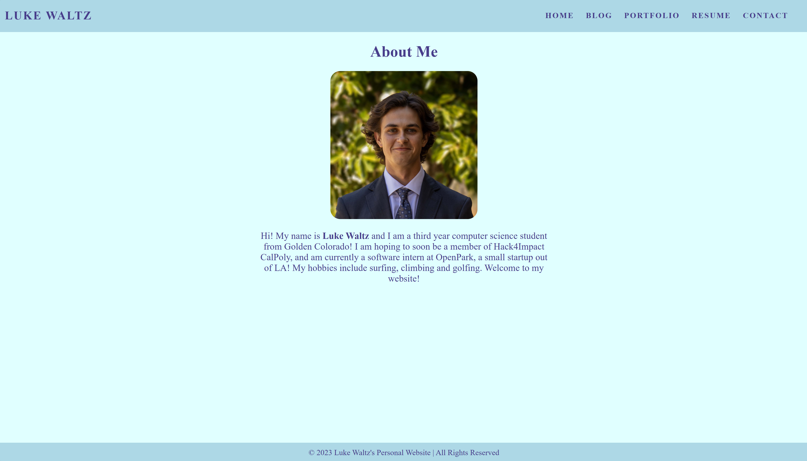
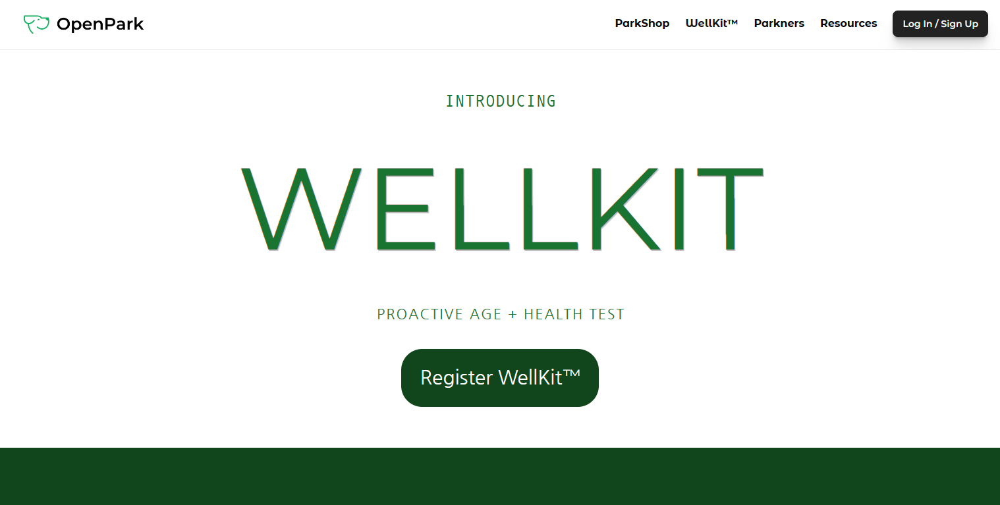

My Portfolio
My Personal Website
I made a personal website using guidance from the Hack4Impact starter pack. This was my first real HTML / CSS project and I am happy with what I created in a mere three days. I intend to continue to contribute to and improve upon this project consistently.
Wellkit Landing Page
My first project for my internship at OpenPark was to develop a landing page for OpenPark's new product, the WellKit. To achieve this I used Framer.com, a web development tool powered by AI. I collaborated closely with the marketing team. I also worked with the CEO of OpenPark, Jared Zabel, as well as UX/UI intern Laryssa Molina. This will be the first of many landing pages I develop for OpenPark, and as my software engineering skills continue to improve I hope to integrate more of my own code into the framework that Framer.com assists me in creating.